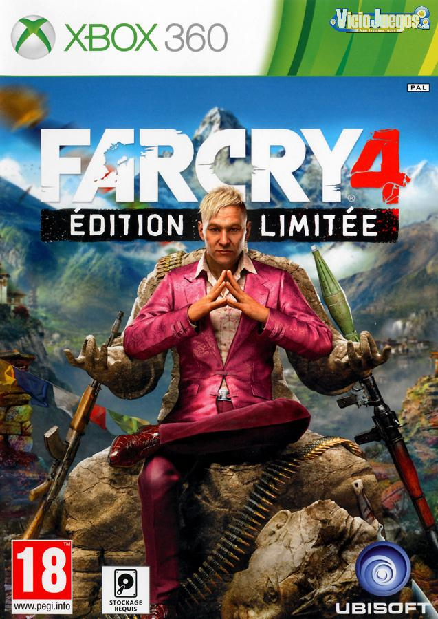
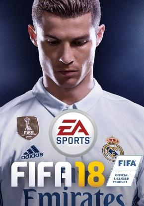
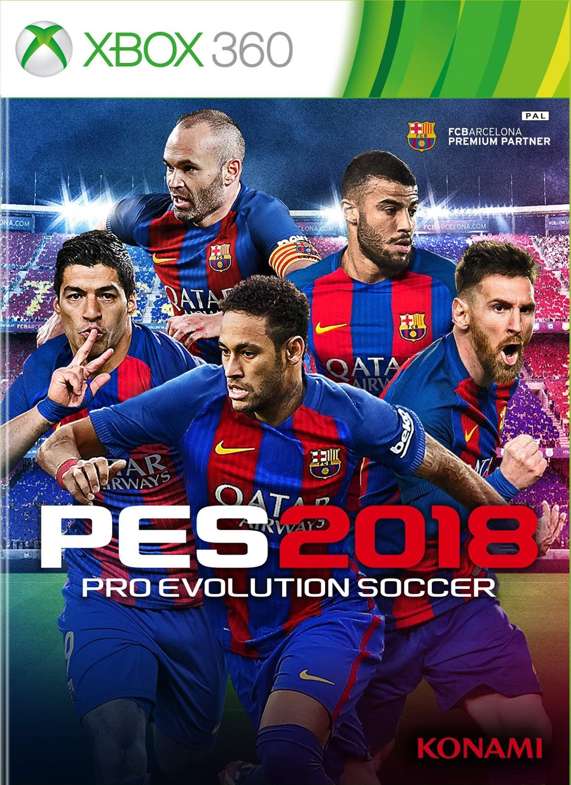
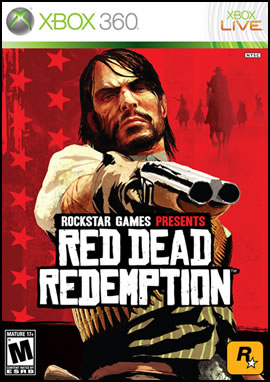

En esta pagina vamos a mostrar uno de los mejores juegos del momento en xbox360 ya que veremos cosas asombrosas de estos fabulosos juegos.
CARATULAS PRINCIPALES DE JUEGOS Xbox360
Farcry4

Far Cry 4 se desarrolla en una región ficticia del Himalaya llamada Kyrat, un país probablemente basado en Bután. El personaje principal del juego es Ajay Ghale, un muchacho De origen Kyrati que viajo a Kyrat para cumplir el último deseo de su madre, Ishwari Ghale, quien quiere que sus cenizas sean "devueltas" junto a Lakshmana. Llegando a Kyrat, el joven Ajay es interceptado por miembros del ejército kyratí y Pagan Min en persona, el rey tirano de Kyrat quien ha instaurado en la región una especie de dictadura-monarquía y que ha logrado elevar su figura a tal punto que algunas personas de la población llegan a considerarlo como un Dios. Ajay es secuestrado por el ejército real y conducido a la mansión de Paul "De Pleur" Harmon (uno de los tres gobernadores de Kyrat). Después de una incómoda comida con Pagan Min y dos personas más, Darpan (acompañante al inicio y miembro de la senda dorada) y De Pleur, Ajay huye del complejo guiado por Sabal otro miembro de la senda dorada que te topas a la salida, siendo Darpan capturado y torturado. Ajay se las resuelve para sobrevivir en medio del ambiente salvaje de Kyrat. Después de aquel día la vida de Ajay se ve envuelto en medio de un caos constante y guerrillas contra el ejército, acompañado de sus fieles compañeros de la Senda Dorada, una causa rebelde fundada por su padre, Mojan Ghale, que planea derrocar el régimen del vil Pagan y de todos sus aliados. En ella se encuentran dos futuros líderes de la Senda, el antes mencionado Sabal y Amita, quienes tienen una grave rivalidad debido a sus distintos puntos de vista. De ambos, solo uno será el líder supremo del futuro Kyrat una vez derrocado pagan min haciendo uso constante del dicho "el fin justifica los hechos". Así pues, el juego permite tomar decisiones personales que influirán en el final de la historia, pudiendo escoger realizar misiones para Amita o bien para Sabal. Las decisiones del personaje provocarán que uno de ellos tome el control de la Senda Dorada, y por lo tanto de Kyrat al finalizar el juego, sustituyendo a la monarquía de Pagan Min y a su régimen. Si se escoge a Sabal, este colocará un gobierno orientado en la vida religiosa y en el culto a las deidades de dicha religión, utilizando incluso matar a los que no están de acuerdo con su gobierno y los antiguos seguidores de Amita, El problema es que el país no tendrá dinero para modernizarse ya que sus fuentes de ingreso son mínimas y suponen un atraso enorme en la región, impidiéndole a sus habitantes tener educación digna o servicios de salud, por ejemplo. Si se escoge a Amita, esta eliminará de raíz a la religión en Kyrat y comenzará a colocar un sistema de gobierno económicamente creciente. Sin embargo, quiere lograr esto a base plantaciones de opio y toda clase de drogas, que le permitirán al país el ingreso de más dinero. Pero además de esto, obligará a la población kyratí a unirse a la Senda Dorada, incluso en contra de su voluntad. A medida que se avanza en el juego, completando encargos, misiones y tomando puestos de control y fortalezas, se avanzará a la fortaleza real, donde Pagan Min espera sentado en su palacio ubicado en lo alto de una montaña. Aquí se puede elegir si asesinarlo o dejarlo vivir. Esta última opción permite dejar las cenizas de la madre de Ajay junto a las de Lakshmana en el mausoleo. Fuera del mausoleo, Pagan Min estará en su helicóptero, listo para abandonar Kyrat. Es posible elegir (nuevamente) si destruir el helicóptero o dejarlo huir. De cualquier forma, el modo historia habrá terminado y se pasará a la pantalla de los créditos del juego. Far Cry 4 también tiene un final secreto o alternativo, con el cual se puede completar el juego en menos de 15 minutos (aprox.) Al inicio del juego, cuando Pagan Min responda su teléfono, pedirá al protagonista que lo espere. Una vez comienza el juego te pedirá explorar el lugar, pero en lugar de irse, se debe esperar los antes mencionados 15 minutos en la planta superior. Cuando lo haga se abrirá uns cinemática donde vuelve Pagan y te dice que es hora de irse, seguido Pagan y Ajay irán al mausoleo, donde relatará que tuvo una hija con Ishwari (la madre del protagonista) y que el padre de Ajay la asesinó. Luego de eso, el personaje podrá dejar las cenizas de su madre junto a las de Lakshmana. Cuando se salga del mausoleo, Pagan estará esperando en el helicóptero, y se mostrarán los créditos finales.
Fifa street4
FIFA Street (también conocido como FIFA Street 2012 o FIFA Street 4) es la cuarta entrega de la serie de videojuegos FIFA Street de EA Sports. Desarrollado por EA Canada por primera vez y publicado por Electronic Arts en todo el mundo bajo el sello EA Sports en marzo de 2012. Tras versiones anteriores, siendo hasta la fecha la última entrega, EA sacó un nuevo FIFA Street con motor similar al del FIFA 12, dejando atrás patadas brutales, regates mágicos y pases y remates infalibles.
Fifa18

FIFA 18 es un videojuego de fútbol, desarrollado por Electronic Arts y publicado por EA Sports Canadá y EA Sports Rumania. Es el 25.º de la serie de videojuegos de la FIFA. Salió a la venta el 29 de septiembre de 2017, siendo la portada del mismo Cristiano Ronaldo.1 Asimismo, cuenta con una edición «Icono» con Ronaldo en la portada.2 Este es el segundo juego de la FIFA en la serie, tras el anterior FIFA 17, en emplear el motor de juego Frostbite, con excepción de las versiones para Play Station 3, Xbox 360 y Nintendo Switch.
Pro Evolution Soccer 2018

Pro Evolution Soccer 2018 (oficialmente abreviado como PES 2018, y llamado Winning Eleven 2018 en Japón) es un videojuego de fútbol de la serie Pro Evolution Soccer desarrollado y publicado por Konami. Fue anunciado el 17 de mayo de 20171 y fue lanzado a la venta el 12 de septiembre de 2017 en América y el 14 de septiembre de 2017 en Europa2 para las plataformas PC, Xbox 360, Xbox One, PlayStation 3, PlayStation 4, Android y IOS. Cuenta con dos diferentes versiones, la edición estándar y la edición legendaria. El paquete de la edición legendaria incluye una caja metálica, un pendrive y acceso a varios artículos dentro de PES, también elementos para myClub y a Usain Bolt.3
PES 2018 recibió el premio a «Mejor juego de deportes» en la Gamescom 2017.4 Esta mención ya la había conseguido con PES 2015 y PES 2016.
Una versión free to play llamada Pro Evolution Soccer 2018 Lite fue lanzada en noviembre de 2017.5
Es el último juego de la saga de PES en ser lanzado para las plataformas PlayStation 3 y Xbox 360.6 Y también el último juego en contar con la licencia de la UEFA Champions League y la UEFA Europa League.
Red Dead Redeption

Red Dead Redemption es un videojuego no lineal de acción-aventura western desarrollado por Rockstar San Diego. El videojuego fue anunciado oficialmente el 4 de febrero de 2009, y fue lanzado el 18 de mayo de 2010 en Norteamérica y el 21 de mayo en Europa y Australia para Xbox 360, y PlayStation 3.6 Es considerado el sucesor espiritual de Red Dead Revolver, lanzado en 2004.7
La historia de Red Dead Redemption transcurre en los últimos años del lejano oeste estadounidense, en 1911, y narra la historia del antiguo bandido John Marston, que es chantajeado por los agentes federales que tienen amenazada a su familia para que ayude a imponer la ley en la frontera mexicano-estadounidense y capture a su antiguo compañero, y actual bandido, Bill Williamson. La acción del videojuego se sitúa en los estados ficticios de New Austin, Nuevo Paraíso y West Elizabeth.
Desde su lanzamiento, Red Dead Redemption ha disfrutado del aplauso unánime de la crítica, pues cuenta con una puntuación de 95/100 en los recopiladores de análisis Metacritic y GameRankings. Rockstar Games ha lanzado cinco contenidos descargables para el videojuego: Mitos y Renegados, Forajidos hasta el final, Leyendas y Asesinos, Mentirosos y Tramposos, Cazador y Mercader y Pesadilla de los No Muertos. En octubre de 2010 se hizo público que cuatro de esas expansiones se recopilarían en un sólo disco: su lanzamiento se produjo el día 26 de noviembre de 2010. El videojuego ha vendido más de once millones de unidades en las plataformas PlayStation 3 y Xbox 360 desde que fuese lanzado al mercado. El 8 de julio de 2016 las ventas aumentaron debido a que el título llegó a Xbox One gracias a la retrocompatibilidad con Xbox 360